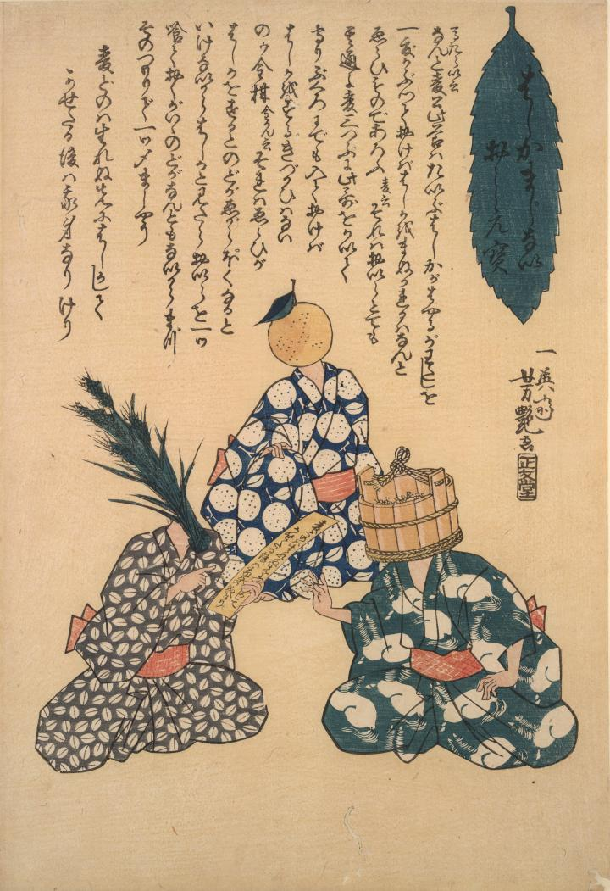

中央下部に、麻疹への効果を語り合っている3体の化物が座っている。左前の麦の頭を持つ化物は短冊を持っている。飼葉桶の頭を持つ化物が右前に座っている。後方中央部には、金柑の頭に持つ化物がいる。
著作者：歌川芳艶／出典：親書誌：U426_nichibunken_0005：はしかまじないおしえ寶；ハシカマジナイオシエダカラ／日付：2006／資源識別子：U426_nichibunken_0005_0001_0000
Copyright (c)2010- International Research Center for Japanese Studies, Kyoto, Japan. All rights reserved.